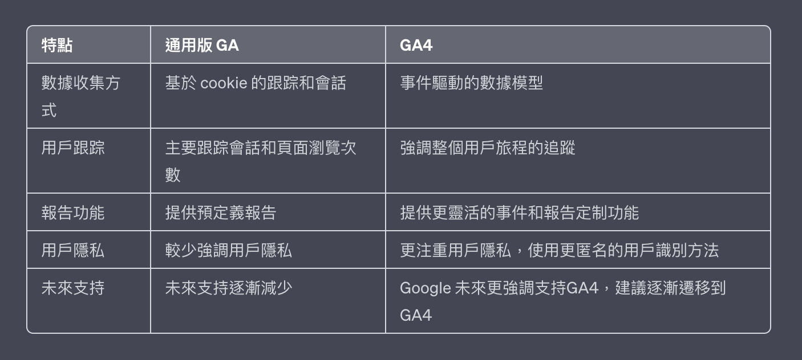
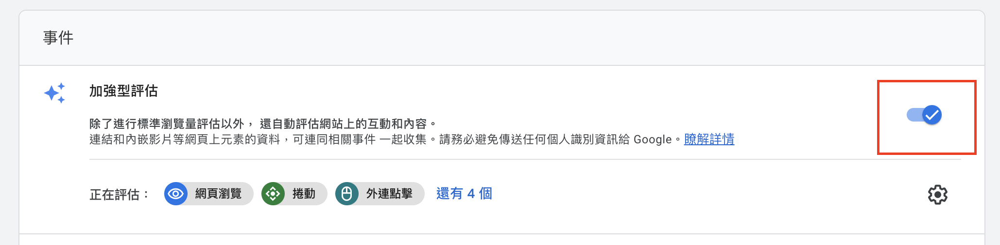
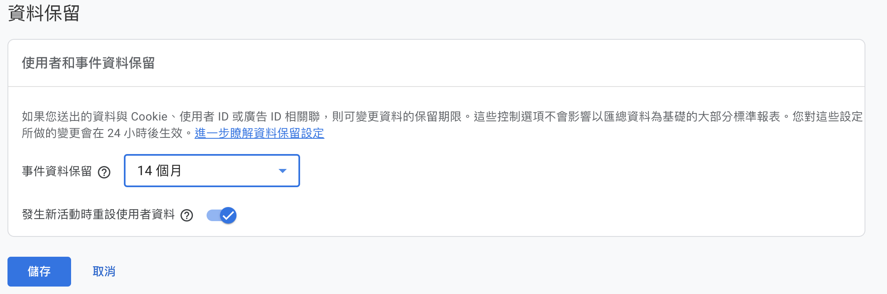
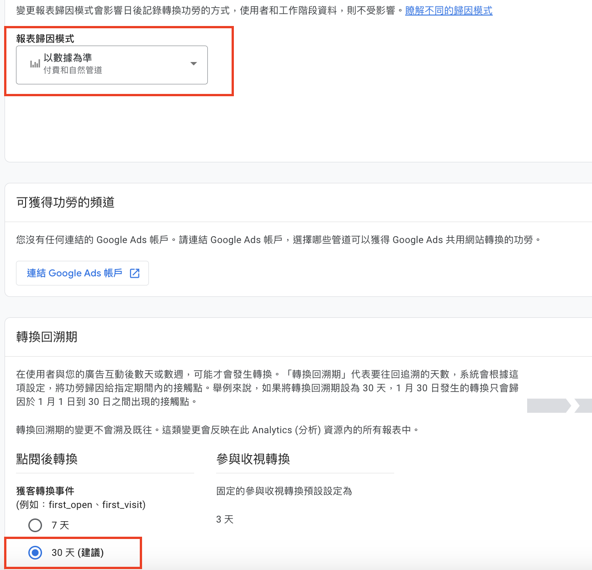
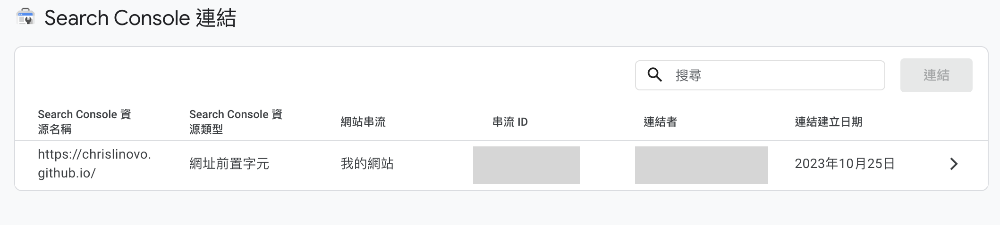

Google Analytics 4 介紹
前言
介紹通用版 GA 與 GA4 差異
-
通用版 GA：追蹤網頁資料為核心。
-
GA4：事件為核心。

這個簡單的表格比較了通用版 GA 和 GA4 在數據收集方式、用戶跟踪、報告功能、用戶隱私和未來支持等方面的主要差異。
網站流量 5 大面向
-
訪客量：每段時間有多少訪客量。
-
相關性：多少比例訪客是目標客群。
-
參與度：訪客在網站上行為。
-
持續性：訪客的回鍋。
-
收益：這些訪客量是否帶來轉換價值或收益。
Google Analytics 帳戶設定
步驟 1：Google 信號啟用
在資源設定/資料收集的 Google 信號資料收集把它打開。
步驟 2：啟用加強評估
打開後 Google 會自動評估網站上的互動和內容，並建立成事件。

步驟 3：事件保留時間
GA4 預設保留 2 個月，建議調整成 14 個月。

步驟 4：歸因分析設定
報表歸因模式及回朔期調整紅匡預設內容即可。

步驟 5：如何設定網域然後做跨網域評估
可讓跨網域評估成效，並進一步定義網站上的哪些連結，在使用加強評估時不會觸發外連點擊事件。
例如：主網站＋另1個獨立個網域，想要合併評估成效
如何設定：資料串流(選擇你的資料)/Google代碼(進行代碼設定)/設定網域/跨網域連結設定
步驟 6：排除非必要流量
如何設定：資料串流(選擇你的資料)/Google代碼(進行代碼設定)/列出不適用的參照連結網址
步驟 7：Search Console 連結
進到 Search Console 按下連結選擇帳號即可。

GA4 事件介紹
根據現有事件，建立新事件
-
特定頁面：
event_name = page_view
page_location 包含 xxx
-
點擊事件：
event_name = click
link_url 包含 xxx
根據值觸發事件
-
purchase 事件且值至少為 1000
event_name = purchase
value 大於或等於 1000
參數設定有打勾
從來源複製事件參數，可以沿用事件既有參數配置
可以用
GA4 Debug View，測試事件
結語
透過此篇介紹來更加了解 GA4。